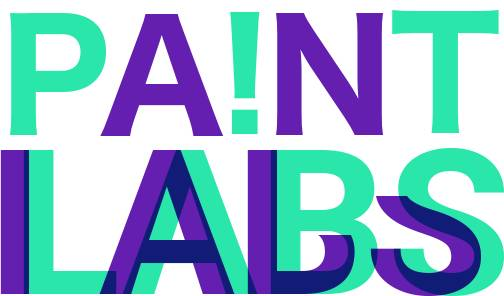
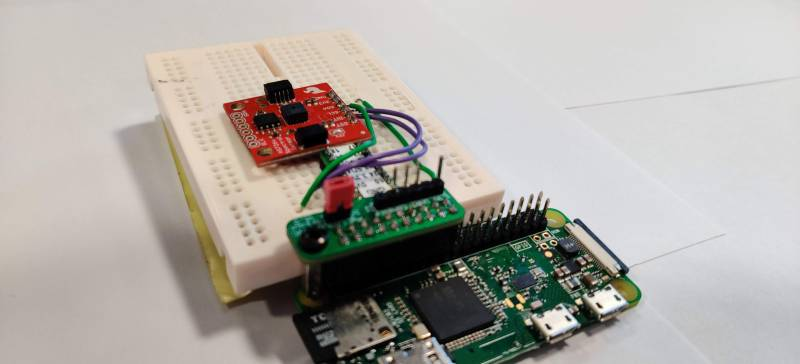
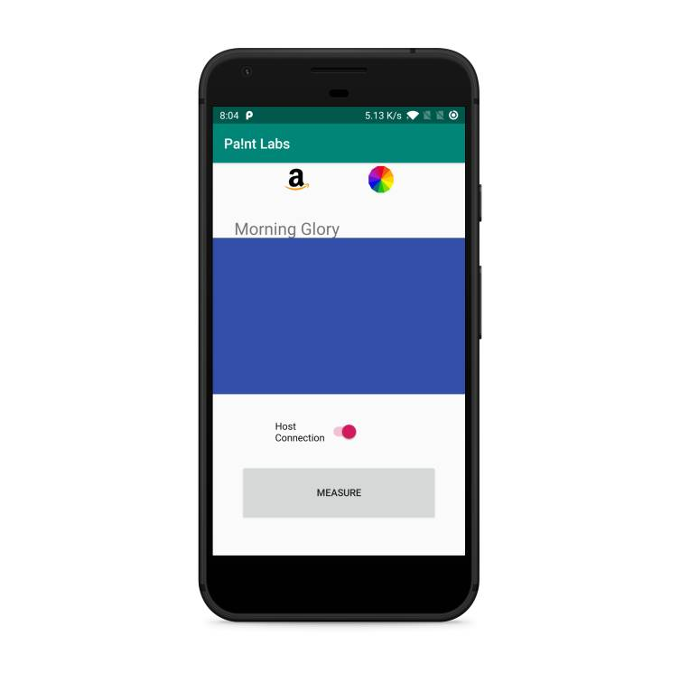

Pa!nt Labs
A solution to accurate colour measurement
Skills used
Analogue electronics, Python on Raspberry Pi, Java on Android Studio.
Concept
This IOT project utilises the AS7262 visible light colour sensor to accurately measure the colour of an object. The result of the measurement, along with detailed information on the colour, is displayed on the user's phone by an app.
This device bases on MQTT, which is a messaging protocol for IOT devices. The user sends a request of measurement from the app, the message is relayed by the MQTT server and arrives at the sensor. The reading from the sensor is sent to the data processing server via MQTT, the detailed information about the colour then finally arrives at the user's end.
